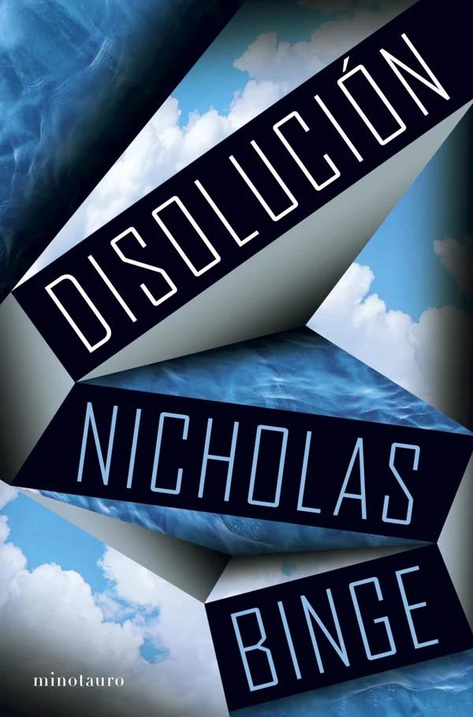
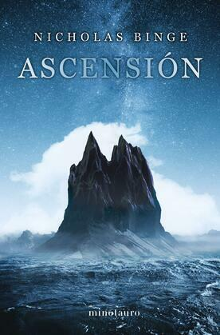

Un asombroso tecnothriller del autor de Ascensión.
planetadelibros.com · Disolución
Hay hoja de subrayados en Mis libros.
Mis libros · Ascensión1La curva del olvido era la representación gráfica clásica de la pérdida gradual de retentiva a lo largo del tiempo. A principios del siglo XX, Hermann Ebbinghaus se propuso cuantificar este proceso y demostró que, una vez memorizado un conjunto de datos detallados, aproximadamente la mitad de ellos se olvidaban durante la primera hora si no se repasaban. Después del primer día, se perdía otro diez por ciento y, al cabo de un mes, un catorce por ciento más. Una vez transcurrido ese tiempo, los recuerdos restantes se quedaban grabados en la memoria más o menos para siempre. Pero los primeros minutos eran decisivos, pues era en ese espacio de tiempo cuando desaparecía la mayor parte de los recuerdos.
2Este truquillo lo ideamos Waldman y yo. La verdad es que, aunque hiciera lo mismo con diez mil fotografías, también acertaríais. El hecho es que no se trata de una cuestión de capacidad limitada. Vuestro cerebro no ha olvidado qué imágenes ha visto; simplemente no os deja acceder a ellas. Esto es como una pequeña trampa, un ardid para engañar al cerebro de modo que os permita recordarlas.
Un asombroso tecnothriller del autor de Ascensión.
planetadelibros.com · DisoluciónHay hoja de subrayados en Mis libros.
Mis libros · AscensiónLa ficha pública está en PlanetadeLibros. Minotauro es el sello editorial. En Mis libros también está Ascensión, la novela anterior de Binge.